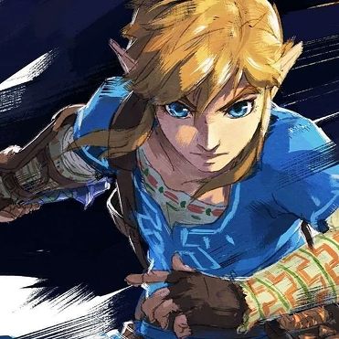

Los Mejores Tips
¡Bienvenido!
Para: TotK
Fusiones de todo tipo #1
Gran Bumerán - Ala de Gleeok:
Este bumerán tan pesado, puede adquirir velocidad si lo fusionas a una Ala de Gleeok.
Arma Guardia - Cuerno Fino Centaleón:
Esta arma hace muchísimo daño, pero se rompe fácil. Usalo mientras montas un centaleón para que nunca se gaste.
Para: TotK
Fusiones de todo tipo #2
Lanza - Cuerno Lizalfos Plateado:
Esta lanza tiene un gran alcance y buen daño. Además puede dañar a varios enemigos a la vez por su forma.
Flecha - Ojo de Keese:
Esta flecha va teledirgida al enemigo. Solo tiene que tenerlo en mira. Solo fíjate si da unos pulsos.
Para: TotK
Función de la ultramano
La ultramano no solo sirve para agarrar y acoplar objetos. Al activarla, podrás ver más fácilmente objetos escondidos, como armas que hayas dejado caer tú o los enemigos, materiales que puedes recolectar o cofres del tesoro enterrados. También puedes usarlo para ver mejor tu entorno como un radar.
Para: BotW y TotK
Cofre de los santuarios
Al seleccionar un santuario, al lado de su nombre saldrá un ícono de un cofre, de color azul. Este te indica si ya agarraste el cofre bonus que siempre tienen los santuarios. Es una buena forma de visualizar si ya tienes el santuario al 100% o no.
Para: TotK
Truco de Batalla: Gólems
Para activar la cámara lenta cuando te golpea un gólem, podrás ver que su ojo cambia de color a rojo claro cuando sea el momento justo para hacer el salto hacia atrás con (ZL) + (L hacia abajo) + (X). Así no fallarás en ningún momento tus ataques.
Para: BotW y TotK
Rupinejos y cuevas
Si ves un rupinejo, no solo lo mates por rupias. Te puede servir, si te ve y lo sigues, irá directo a una cueva. Con este truco podrás encontrar cuevas mucho más fácil. Además si selecccionas al rupinejo en la enciclopedia hyliana para buscarlo será mucho más fácil. Recuerda tener una foto antes.
Para: TotK
¡Aprovecha a Tureli!
Algo que mucha gente hace para aprovechar al máximo las corrientes de aire de Tureli, después de usarlo: soltar la paravela (B) y sujetarla de nuevo con (X) tres veces. Así ganarás un poco más de impulso horizontal. Un truco adicional: Si quieres detenerte en el aire a descansar, tira una flechacombianada con un bloque flotante.
Para: TotK
Cómo hallar raíces más fácil
La superficie y el subsuelo de Hyrule son más similares de lo que parece a simple vista. Por ejemplo, ¿sabias que cada raíz del subsuelo está situada justo debajo de un santuario de la superficie? Eso significa que puedes usar el mapa para adivinar dónde puede encontrarse una raíz según los santuarios que hayas visitado hasta el momento y viceversa.